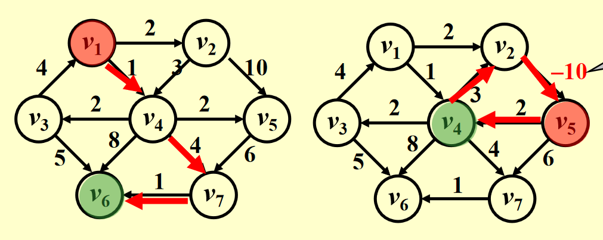
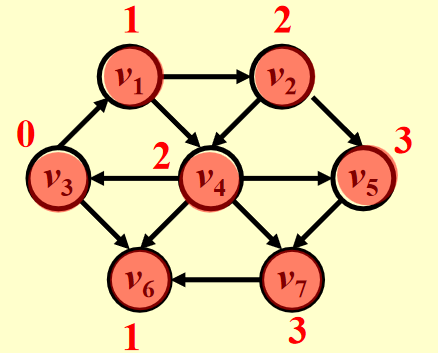
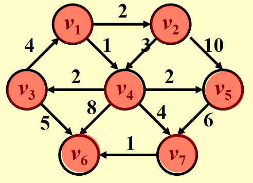
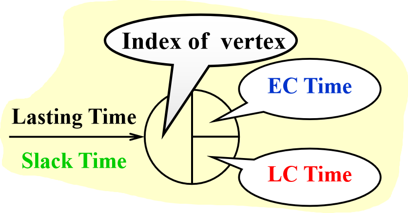
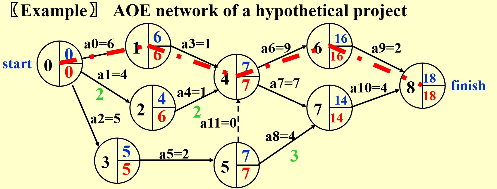

图：最短路径算法（Shortest Path Algorithms）
一、单源最短路径问题 (Single-Source Shortest-Path Problem)
1. 问题定义
给定一个加权有向图 \( G = (V, E) \)，其中：
- \( V \) 是顶点集
- \( E \) 是边集
- 每条边 \( e \in E \) 有一个权重（成本）函数 \( c(e) \)
- 指定一个起点顶点 \( s \)
目标：找到从 \( s \) 到图中每个其他顶点的最短加权路径。
路径长度：对于从起点到终点的路径 \( P \)，其长度定义为路径上所有边的权重之和：
注意：
- 如果图中存在 负权环（negative-cost cycle），最短路径可能不存在（因为可以无限循环降低路径成本）。
- 若无负权环，从 \( s \) 到自身的路径长度定义为 0。
-
在带权图中，对于任意三个顶点 \( u \)、\( v \)、\( w \)，最短路径满足：
\[ \text{dist}(u, w) \leq \text{dist}(u, v) + \text{dist}(v, w) \]
其中 \( \text{dist}(x, y) \) 表示 \( x \) 到 \( y \) 的最短路径长度。
2. 示例图
PPT 中给出了两个示例有向图，展示正权和负权边的情况：

负权边示例：边 \( v2 \to v5 \) 的权重从 10 变为 -10，可能影响最短路径计算。
二、无权最短路径算法 (Unweighted Shortest Paths)
1. 核心思想
无权图中，边的权重均视为 1，因此最短路径等价于 最少边数 的路径。采用 广度优先搜索 (BFS) 的思想，按距离递增的顺序探索顶点。
2. 数据结构
使用一个表Table[i]存储每个顶点 \( v_i \) 的信息：
- Dist：从起点 \( s \) 到 \( v_i \) 的距离（初始为 \( \infty \)，起点为 0）
- Known：是否已确定最短路径（1 为已确定，0 为未确定）
- Path：记录路径上的前驱顶点（初始为 0）
3. 基本算法
以下是无权最短路径的伪代码实现：
void Unweighted(Table T) {
int CurrDist;
Vertex V, W;
for (CurrDist = 0; CurrDist < NumVertex; CurrDist++) {
for (each vertex V) {
if (!T[V].Known && T[V].Dist == CurrDist) {
T[V].Known = true;
for (each W adjacent to V) {
if (T[W].Dist == Infinity) {
T[W].Dist = CurrDist + 1;
T[W].Path = V;
}
}
}
}
}
}
算法步骤：
- 从距离 0 开始（即起点 \( s \)），逐层处理距离为 \( CurrDist \) 的顶点。
- 对于每个未处理（Known = 0）且距离为 \( CurrDist \) 的顶点 \( V \)：
- 标记为已处理（Known = true）。
- 检查 \( V \) 的所有邻接顶点 \( W \)，若 \( W \) 的距离为 \( \infty \)，更新为 \( CurrDist + 1 \)，并记录前驱为 \( V \)。
时间复杂度：
- 最坏情况：\( O(|V|^2) \)，因为需要扫描所有顶点多次。
- 适合稠密图。
4. 改进版算法（基于队列）
通过使用队列优化，减少不必要的扫描：
void Unweighted(Table T) {
Queue Q;
Vertex V, W;
Q = CreateQueue(NumVertex);
MakeEmpty(Q);
Enqueue(S, Q); /* Enqueue the source vertex */
while (!IsEmpty(Q)) {
V = Dequeue(Q);
T[V].Known = true; /* optional */
for (each W adjacent to V) {
if (T[W].Dist == Infinity) {
T[W].Dist = T[V].Dist + 1;// 加1是因为无权，边都视为1
T[W].Path = V;
Enqueue(W, Q);
}
}
}
DisposeQueue(Q);
}
改进点：
- 使用队列 \( Q \) 存储待处理的顶点，从起点 \( s \) 开始。
- 出队顶点 \( V \)，处理其邻接顶点 \( W \)，若 \( W \) 未访问（Dist = \( \infty \)），更新距离并入队。
时间复杂度：
- \( O(|V| + |E|) \)，因为每个顶点入队一次，每条边处理一次。
- 适合稀疏图。
示例运行

以起点 \( v3 \) 为例，改进版算法的执行过程如下：
| 步骤 | 队列 Q | Dist 更新 | Path 更新 |
|---|---|---|---|
| 0 | v3 | v3: 0 | v3: 0 |
| 1 | v1, v6 | v1: 1, v6: 1 | v1: v3, v6: v3 |
| 2 | v6, v2, v4 | v2: 2, v4: 2 | v2: v1, v4: v1 |
| 3 | v2, v4 | - | - |
| 4 | v4, v5 | v5: 3 | v5: v2 |
| 5 | v5, v7 | v7: 3 | v7: v4 |
| 6 | v7 | - | - |
最终结果：
| 顶点 | Dist | Path |
|---|---|---|
| v1 | 1 | v3 |
| v2 | 2 | v1 |
| v3 | 0 | 0 |
| v4 | 2 | v1 |
| v5 | 3 | v2 |
| v6 | 1 | v3 |
| v7 | 3 | v4 |
三、Dijkstra 算法 (Weighted Shortest Paths)
1. 核心思想
Dijkstra 算法用于 非负权边 的加权图，采用 贪心策略，每次选择距离起点最近的未处理顶点，更新其邻接顶点的距离。
关键概念：
- \( S \): 已找到最短路径的顶点集合（初始为 \( \{s\} \)）。
-
\( distance[u] \): 从 \( s \) 到 \( u \) 的最短路径长度（仅通过 \( S \) 中的顶点）。
\[ distance'[u_2] = distance[u_1] + c(u_1, u_2) \]
更新规则：若发现通过新加入的顶点 \( u_1 \) 到 \( u_2 \) 的路径更短，则更新。
2. 伪代码实现
#define inf 999999
#define MAX 100007
bool visited[MAX] = {false};
//源顶点S
int s;
void Dijkstra(Graph *G,int s){
//创建优先队列
Queue *q;
//初始化队列
InitQueue( q );
int distance[MAX], i;
//for(i = 0;i <= MAX;i ++){
if(i != s){
//如果不是源顶点，就赋值为“无穷大”，
distance[i] = inf;
}else{
distance[i] = 0;
visited[i] = true;
}
//}
//w就是新邻居捏
int w, new_distance;
//s入队列
EnQueue(q, s);
visited[s] = true;
//IsEmpty判断队列是否为空
while( !IsEmpty(q) ){
v = DeQueue(q);
//FirstNeighbor(G, v):求图G中顶点v的第一个邻接点，
//若有则返回顶点号，否则返回-1。
//NextNeighbor(G, v, w):假设图G中顶点w是顶点v的一个邻接点，返回除w和已访问外的顶点v
for(w = FirstNeighbor(G, v);w >= 0;w = NextNeighbor(G, v, w)){
//calculate_distance实现两顶点间权的读取
new_distance = calculate_distance(v, w) + distance[v];
if(new_distance <= distance[w]){
distance[w] = new_distance;
}
if(visited[w] == false) {
visited[w] = true;
EnQueue(w);
}
}
}
}
算法步骤：由于是单源，所以记源顶点为S。
-
初始化
- 创建一个集合
visited，这个是记录已经找到最短路径的节点。开始时，初始化为空的就好。 - 创建一个优先队列（如最小堆），将源节点加入队列。
- 创建一个数组
distance[i]，用于存储从源节点到其他节点的当前已知最短距离。将distance[S]初始化为0；将优先队列中的顶点对应的距离，设置为源到该顶点的权重；而除优先队列以外的其他所有节点的距离初始化为无穷大。
- 创建一个集合
-
从优先队列中取出相邻距离最小的节点
- 从优先队列中取出相邻距离最小的节点
u。（如果队列为空，则算法结束。） - 将节点
u标记为已访问（将其添加到visited集合中）。
- 从优先队列中取出相邻距离最小的节点
-
更新未访问邻居的距离：遍历节点
u的所有邻居v，如果distance[v]是无穷大或其他值，则有：- 计算通过节点
u到达节点v的距离，即new_distance = distance[u] + weight(u, v)。 - 如果
new_distance小于当前已知的distance[v]，则更新distance[v]为new_distance。 - 如果节点
v尚未在优先队列中，或者其当前优先级高于新计算的距离，则将节点v（及其新距离）加入优先队列。
- 计算通过节点
-
重复：重复步骤2和3，直到优先队列为空，即所有节点都已从队列中取出并被标记为已访问。
-
结果：
distance[]数组现在得到了从源节点到图中所有其他节点的最短距离。
限制：不适用于负权边（可能导致错误结果）。
3. 时间复杂度
-
实现 1：每次扫描表选择最小距离顶点，复杂度 \( O(|V|) \)。（适合稠密图）
- 初始化：设置 \( V \) 个顶点的距离，时间复杂度为 \( O(V) \)。
-
选择最小距离顶点：每次需要扫描所有未处理顶点，初始时有 \( V \) 个顶点，之后逐个减少。总共执行 \( V \) 次选择，第一次扫描 \( V \) 个元素，第二次扫描 \( V-1 \) 个，……，最后一次扫描 1 个。总扫描次数为：
\[ \sum_{i=1}^{V} i = \frac{V (V + 1)}{2} = O(V^2) \] -
更新距离：每次处理一个顶点 \( u \) 时，检查其所有邻接顶点。每个顶点最多被处理一次，边数为 \( E \)，因此总更新操作的次数为 \( O(E) \)。每次更新是 \( O(1) \) 的，因此总时间为 \( O(E) \)。
- 总时间复杂度：\( O(V^2 + E) \)。在稀疏图中（\( E \) 远小于 \( V^2 \)），主项为 \( O(V^2) \)；在稠密图中（\( E \approx V^2 \)），复杂度仍为 \( O(V^2) \)。
-
实现 2：使用优先队列（如最小堆）。（适合稀疏图）
- 初始化：将所有 \( V \) 个顶点插入优先队列，时间复杂度为 \( O(V) \)。
- 提取最小元素：每次从二叉堆中提取最小元素，操作时间复杂度为 \( O(\log V) \)。总共执行 \( V \) 次，时间复杂度为 \( O(V \log V) \)。
- 减少键值（更新距离）：每次处理一个顶点时，可能需要更新其所有邻接顶点的距离。每个顶点最多被处理一次，边数为 \( E \)，因此减少键值操作的总次数不超过 \( E \)。在二叉堆中，减少键值的时间复杂度为 \( O(\log V) \)，总时间复杂度为 \( O(E \log V) \)。
- 总时间复杂度：\( O((V + E) \log V) \)，其中 \( V \) 是顶点数，\( E \) 是边数。
-
实现 3：使用斐波那契堆。（适合稠密图）
- 初始化：将 \( V \) 个顶点插入斐波那契堆，时间复杂度为 \( O(V) \)。
- 提取最小元素：每次提取最小元素，均摊时间复杂度为 \( O(\log V) \)。总共执行 \( V \) 次，时间复杂度为 \( O(V \log V) \)。
- 减少键值（更新距离）：斐波那契堆的减少键值操作的均摊时间复杂度为 \( O(1) \)。由于每个顶点可能触发最多 \( E \) 次减少键值操作（对应图中的边），总时间复杂度为 \( O(E) \)。
- 总时间复杂度：\( O(V \log V + E) \)，其中均摊分析确保了减少键值的 \( O(1) \) 优势。
| 数据结构 | 提取最小元素 | 减少键值 | 总时间复杂度 | 适用场景 |
|---|---|---|---|---|
| 二叉堆 | \( O(\log V) \) | \( O(\log V) \) | \( O((V + E) \log V) \) | 简单实现，中小规模图，通用场景 |
| 斐波那契堆 | \( O(\log V) \) | \( O(1) \) | \( O(V \log V + E) \) | 大规模图，频繁更新距离，优化场景 |
| 线性扫描 | \( O(V) \) | \( O(1) \) | \( O(V^2 + E) \) | 顶点数少、图稠密、简单实现场景 |
Dijkstra 算法示例
还是以这个图为例，不过我们这次从\(v_1\)出发。

| 步骤 | 队列/当前顶点 | Dist 更新 | Path 更新 | Visited 更新 |
|---|---|---|---|---|
| 0 | \( v_1 \) | \( v_1: 0 \) | \( v_1: -1 \) | \( v_1: 1 \) |
| 1 | \( v_4 \) | \( v_4: 1, v_2: 2 \) | \( v_4: v_1, v_2: v_1 \) | \( v_4: 1 \) |
| 2 | \( v_2 \) | \( v_3: 3, v_5: 3, v_6: 9, v_7: 5 \) | \( v_3: v_4, v_5: v_4, v_6: v_4, v_7: v_4 \) | \( v_2: 1 \) |
| 3 | \( v_3 \) | - | - | \( v_3: 1 \) |
| 4 | \( v_5 \) | - | - | \( v_5: 1 \) |
| 5 | \( v_7 \) | \( v_6: 6 \) | \( v_6: v_7 \) | \( v_7: 1 \) |
| 6 | \( v_6 \) | - | - | \( v_6: 1 \) |
最终结果：
| 顶点 | Dist | Path |
|---|---|---|
| v1 | 0 | 0 |
| v2 | 2 | v1 |
| v3 | 3 | v7 |
| v4 | 1 | v2 |
| v5 | 3 | v3 |
| v6 | 6 | v4 |
| v7 | 5 | v6 |
四、负权边处理 (Graphs with Negative Edge Costs)
1. 简单想法的失败
- 错误方案：将所有边权重加上一个常数 \( \Delta \) 以消除负权边。
- 问题：改变路径权重比例（比如有的最短路径要走3条边，而有的只走2条，每条边加一个常数显然是不对的），可能导致最短路径变化。
最短路径性质例题
（FDS HW9）Let P be the shortest path from S to T. If the weight of every edge in the graph is incremented by 2, P will still be the shortest path from S to T. (T / F)
答案：
不一定。路径P可能不再保持最短路径的性质。
解析：
-
原最短路径的特性
在原图中，P的路径总权重是所有S到T路径中最小的。
-
权重增加后的影响
- 设P包含k条边，则P的新权重 = 原权重 + 2k
- 其他路径Q包含m条边，新权重 = 原权重 + 2m
- 如果原图中P比Q短很多（原权重差>2(m-k)），P仍保持最短
- 但如果存在另一条路径Q，在原图中稍长于P但边数少很多（m<<k），增加权重后Q可能变得更优
-
反例说明
- 路径P：2条边，每边权重1 → 总权重2
- 路径Q：1条边，权重3 → 总权重3
原本P是最短路径，但是增加2后：
- P：2×(1+2)=6
- Q：3+2=5
此时Q成为新的最短路径。
2. 负权边算法
void WeightedNegative(Table T) {
Vertex V, W; // V 和 W分别表示当前处理的顶点和其邻接顶点
Queue Q = CreateQueue(NumVertex); // 创建一个队列 Q
MakeEmpty(Q); // 清空队列 Q，准备使用
Enqueue(S, Q); // 将源点 S 入队，作为起点开始松弛
while (!IsEmpty(Q)) { // 当队列非空时，持续执行松弛操作
V = Dequeue(Q); // 从队列头部取出当前处理的顶点 V
for (each W adjacent to V) { // 遍历 V 的所有邻接顶点 W
if (T[V].Dist + Cvw < T[W].Dist) { // 如果通过 V 到 W 的距离小于当前 T[W].Dist
T[W].Dist = T[V].Dist + Cvw; // 更新 W 的距离为 V 的距离加上边权重 Cvw
T[W].Path = V; // 更新 W 的前驱为 V
if (W is not already in Q) // 如果 W 不在队列中
Enqueue(W, Q); // 将 W 入队，以便后续松弛其邻接顶点
}
}
}
DisposeQueue(Q); // 释放队列 Q 的内存
}
时间复杂度：\( O(|V| \cdot |E|) \)，适合稀疏图。
负权边例子
假设图为：
- \( S \to A: 4 \)
- \( S \to B: 2 \)
- \( A \to B: -2.5 \)
- \( B \to C: 3 \)
初始化：
- \( T[S].Dist = 0, T[A].Dist = \infty, T[B].Dist = \infty, T[C].Dist = \infty \)
- 入队 \( S \)。
步骤：
- 处理 \( S \): 更新 \( A: 4 \), \( B: 2 \)，入队 \( A, B \)。
- 处理 \( B \): 更新 \( C: 5 \)，入队 \( C \)。
- 处理 \( A \): 更新 \( B: 1.5 \) (更好)，入队 \( B \)。
- 处理 \( B \): 更新 \( C: 4.5 \)。
- 处理 \( C \): 无更新。
结果：\( S: 0, A: 4, B: 1.5, C: 4.5 \)。
五、无环图最短路径 (Acyclic Graphs)
若图是 无环图（DAG），可按 拓扑排序 顺序处理顶点。
AOE网络


-
早期完成时间 (EC)
- 公式：\( EC[w] = \max_{(v,w) \in E} \{ EC[v] + C_{v,w} \} \)
- 从起点 \( v_0 \) 开始，\( EC[v_0] = 0 \)；对于任意节点 \( w \)，其早期完成时间是所有前驱 \( v \) 的 \( EC[v] + C_{v,w} \) 中的最大值。
- 意义：表示在不延误项目的前提下，事件 \( w \) 最早可能完成的时间。
-
晚期完成时间 (LC)
- 公式：\( LC[v] = \min_{(v,w) \in E} \{ LC[w] - C_{v,w} \} \)
- 从终点 \( v_8 \) 开始，\( LC[v_8] \) 通常设为 \( EC[v_8] \)（项目截止时间）；对于任意节点 \( v \)，其晚期完成时间是所有后继 \( w \) 的 \( LC[w] - C_{v,w} \) 中的最小值。
- 意义：表示事件 \( v \) 最晚完成的时间，而不延误整个项目。
-
Slack Time (松弛时间)
- 公式：\( \text{Slack Time of } <v,w> = LC[w] - EC[v] - C_{v,w} \)
- 表示活动 \( <v,w> \) 的浮动时间，即在不影响项目进度的前提下，该活动可以推迟的时间。
- 零松弛边：\( \text{Slack Time} = 0 \) 的边属于关键路径。
-
关键路径 (Critical Path)
- 定义：由全部零松弛边的路径组成，确定项目的最短完成时间。
- 重要性：关键路径上的活动若延误，将直接延长项目总工期。
时间复杂度：\( O(|V| + |E|) \)。
六、全对最短路径问题 (All-Pairs Shortest Path Problem)
- 方法 1：对每个顶点运行单源最短路径算法。
- 时间复杂度：\( O(|V|^3) - \text{works fast on sparse graph} \)。
- 方法 2：Floyd-Warshall 算法。
- 时间复杂度：\( O(|V|^3) \)。